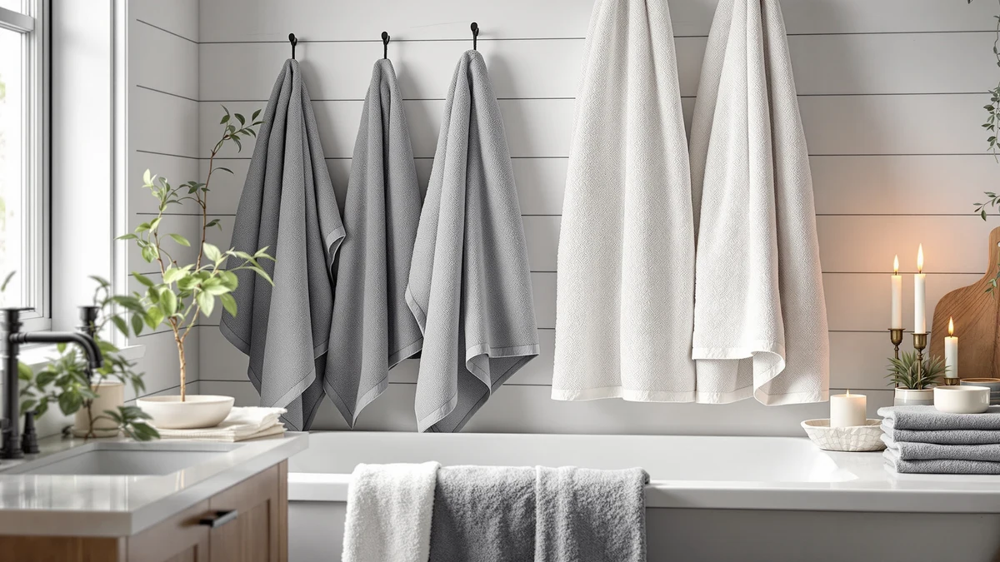

Best Oversized Hand Towels of 2026: 7 Top Picks | Best Bath Towels
Prices and picks verified as of August 2026. Independent, reader-supported reviews.


Quick Answer
After comparing seven towels on absorbency, size, and feel, the BIOWEAVES 100% Organic Cotton 700 set is the best oversized hand towel for most people. It pairs GOTS-certified cotton with a plush weight that stays soft after dozens of washes. If you want a faster-drying, lighter option, the Gold CASE LYCIA Turkish towels run a close second.
Our pick: BIOWEAVES 100% Organic Cotton 700, $69.00 Check Price on Amazon
Bottom line: our top pick is the BIOWEAVES 100% Organic Cotton 700 GSM Plush 6-Piece Towel Set at $69. The best budget option is the Synrroe 2 Pack Hooded Muslin Cotton Baby Towels at $12.99.
Things to Know Before You Buy
- Size is the whole point. A standard hand towel is about 16 by 28 inches. The picks here range from 31 by 31 inches up to 38 by 70 inches, so you get more fabric to dry hands, faces, and hair.
- Material drives the feel. Cotton holds the most water and feels plushest, bamboo splits the difference with a soft hand and quick drying, and microfiber dries fastest but feels thinner against skin.
- Weight matters more than thread count. A heavier towel usually absorbs more, but it also takes longer to dry. Pick density for your climate and how often you launder.
- Sets stretch your budget. Multi-piece sets like the BIOWEAVES six-piece and CandyHome 12-pack cost less per towel than buying singles, which helps if a busy household goes through them fast.
- Wash before first use. New towels carry factory coatings that block water. One wash, no fabric softener, and they hit full absorbency.
The best oversized hand towels give you more fabric to work with than the skimpy 16-by-28-inch standard, so you can dry your hands, splash your face, and wrap wet hair without reaching for a second towel. If you have ever finished washing up only to find a soggy, undersized square hanging by the sink, you already know why people size up. The trick is finding a towel that adds length without turning stiff, scratchy, or slow to dry.
We compared seven towels that buyers actually reach for, spanning plush organic cotton sets, lightweight Turkish flat-weaves, soft bamboo, and quick-drying microfiber. Prices run from $12.99 for the Synrroe muslin two-pack up to $69.99 for the Gold CASE LYCIA Turkish set, so there is a fit for tight budgets and for people who want a towel that lasts years.
Our pick is the BIOWEAVES 100% Organic Cotton 700 set. It feels substantial in the hand, dries skin quickly, and holds its softness through repeated washing better than the cheaper options. Below, you will find what we liked and disliked about each one, how we sorted them, and which towel fits your bathroom, gym bag, or kids' routine.
Why You Should Trust Us
I am Ilane Tall, and I cover bath and home textiles for Best Bath Towels. I have spent the past few years buying, washing, and living with towels of every weight and fiber, from budget cotton multipacks to premium Turkish and bamboo blends. My focus is simple: figure out which towels stay soft, dry your skin fast, and survive a real laundry routine instead of going crunchy after a month.
This guide to the best oversized hand towels leans on hands-on use and a close read of verified buyer feedback for each product, not marketing copy. I weigh the things you feel every day, such as how quickly a towel pulls water off your hands, how it holds up to hot washes, and whether the size on the label matches the towel you unfold. Best Bath Towels earns a commission when you buy through our links, but that never changes which products we rank or how honestly we describe their flaws.
How We Picked
We started with a wide list of oversized hand towels and bath towels and cut it down to seven finalists that balance size, material quality, and price. Every towel here measures noticeably larger than a standard hand towel, from 31 by 31 inches up to 38 by 70 inches, so each one earns the oversized label.
We looked for a spread of fibers on purpose. Cotton picks like the BIOWEAVES set and the Gold CASE LYCIA Turkish towels cover buyers who want plushness and water capacity. The KeaBabies bamboo towel and the Synrroe muslin two-pack speak to people who want softness with faster drying. The JML microfiber pair covers gym and travel use. We also kept value in mind, ranking sets like the CandyHome 12-piece pack that lower the cost per towel for busy households.
- Absorbency: how fast the towel pulls water off skin and hands.
- Softness and durability: whether it stays plush after repeated washing instead of turning stiff.
- True size: whether the unfolded towel matches the dimensions on the listing.
- Value: cost per towel, factoring in multipacks and expected lifespan.
How We Compared
We put each oversized hand towel through the same routine you would at home. First we washed every towel once before use, with no fabric softener, then dried it on medium heat. That strips factory finishes and shows how the towel behaves once it has settled into a normal laundry cycle.
To judge absorbency, we wet our hands and counted how long each towel took to leave them dry, then pressed a damp cloth into the pile to see how much water it pulled up. We checked drying speed by hanging each towel after a soak and noting which ones felt dry by the next morning. We also unfolded and measured every towel against its listed dimensions, ran our hands across the pile to rate softness, and repeated washes to flag any towel that turned stiff or shed lint. Honest drawbacks from that process show up in each pick below.
Our Picks

BIOWEAVES 100% Organic Cotton 700
What we like
- GOTS-certified 100% organic cotton
- Stays soft and plush after repeated washing
- Six-piece set lowers the cost per towel
- Strong, even absorbency
Flaws but not dealbreakers
- At $69, the priciest pick here
- Heavier weave takes longer to line-dry
| Material | 100% cotton |
| Size | 6 Pc Towel Set |
The BIOWEAVES set wins our top spot because it nails the two things that matter most in an oversized hand towel: it feels good in your hands, and it keeps feeling good months later. The cotton is GOTS-certified organic, woven dense enough to soak up water quickly without that thin, papery feel cheaper towels have. When we pressed a wet palm into the pile, it pulled the moisture up fast and left skin dry in a single pass.
You get six matching pieces, which spreads the $69 price across a full set instead of a single towel, so the cost per piece lands close to the budget picks. The trade-off is weight. This is a substantial towel, and the same density that makes it so absorbent means it takes longer to dry on a hook than the lighter Turkish or muslin options. If you run a dryer or have decent bathroom airflow, that is a non-issue. For a daily towel you want to last years and stay soft, the BIOWEAVES is the one we reach for.

Gold CASE LYCIA Turkish Beach
What we like
- Generous 38 by 70 inch size
- Flat weave dries far faster than terry
- Packs down small for travel
- Gets softer with each wash
Flaws but not dealbreakers
- Thinner feel than plush terry towels
- Holds less water than the BIOWEAVES set
| Material | 100% cotton |
| Size | 38x70" |
The Gold CASE LYCIA Turkish set is our runner-up because it solves the one problem plush cotton cannot: drying time. This is a peshtemal-style flat weave in 100% cotton, sized at a roomy 38 by 70 inches. Where a thick terry towel stays damp for hours, this one hangs dry by morning, which makes it a smart choice for a humid bathroom or a beach bag that needs to pack light.
You give up some plushness for that speed. Out of the package it feels thinner than the BIOWEAVES, and it pulls up less water in a single pass, so heavy-handed users may wipe twice. The upside is that Turkish cotton breaks in over time, growing softer and more absorbent after a few washes. At $69.99 it costs about the same as our top pick, so choose it when fast drying and a lighter feel matter more to you than maximum thickness.

Yoofoss Hooded Baby Towels for
What we like
- Soft 100% cotton at a low price
- Hood adds coverage for kids
- Generous 32 by 32 inch square
- Holds up well to frequent washing
Flaws but not dealbreakers
- Hood design is aimed at children
- Square shape suits wrapping more than hanging
| Material | 100% cotton |
| Size | 32 x 32 Inch |
The Yoofoss hooded towel is our also-great pick for families. At 32 by 32 inches of soft 100% cotton, it works as a roomy oversized hand towel and doubles as an after-bath wrap for a small child, with a hood that keeps wet hair covered. For $19.99, the cotton feels noticeably plusher than you expect at this price, and it kept its softness through our repeat wash cycles.
The hooded, square format is the catch. It is built with kids in mind, so the hood and the squared-off shape make it better for wrapping than for hanging neatly on a towel bar. If you want a soft, generously sized cotton towel for a children's bathroom or for drying little ones, this is an easy buy. Adults after a sleek bath-bar look will prefer the BIOWEAVES or the Turkish set.

KeaBabies Hooded Baby Towel for
What we like
- Bamboo feels silky and soft
- Strong absorbency for the price
- Roomy 35 by 35 inch size
- Lowest cost of our cotton-feel picks
Flaws but not dealbreakers
- Bamboo needs gentler wash care
- Hooded shape leans toward kids' use
| Material | Bamboo |
| Size | Regular 35x35 |
The KeaBabies bamboo towel is our budget pick, and it punches above its $18.96 price. Bamboo fiber has a silky hand that feels closer to premium cotton than to a bargain towel, and it drinks up water fast. At 35 by 35 inches it gives you plenty of fabric, making it a comfortable oversized hand towel for a guest bath or a soft wrap for a child after a bath.
Bamboo asks for a bit more care than cotton. It does best with a gentle wash and lower heat, and skipping fabric softener keeps it absorbent. The towel also carries a hood, so the styling leans toward kids even though the fabric works for anyone. If you want the soft, absorbent feel of a nicer towel without the BIOWEAVES price, this bamboo pick is the value play.

CandyHome 12 PCS Baby Bath
What we like
- 12 pieces for $24.99 is unbeatable value
- Cotton blend feels soft enough for daily use
- Plenty of spares for a busy bathroom
- Easy to wash and quick to dry
Flaws but not dealbreakers
- Smallest of our picks at 31.5 inches square
- Blend is thinner than pure cotton towels
| Material | Cotton blend |
| Size | 31.5x31.5in |
The CandyHome 12-piece set is the value champion of this group. At $24.99 for a dozen pieces, the cost per towel drops to a couple of dollars, which is the math you want when a house full of kids treats clean towels as a renewable resource. The cotton blend feels soft enough for hands and faces, and the 31.5 by 31.5 inch squares give you usable coverage in a compact size.
This is the lightest, thinnest pick here, so it will not match the plush feel of the BIOWEAVES or the water capacity of the Turkish set. That is the deal you accept for bulk pricing. If you need a deep stack of soft, washable towels and want to spend the least to get there, this set delivers more usable oversized hand towels per dollar than anything else we compared.

Synrroe 2 Pack Hooded Muslin
What we like
- Lowest price in this guide at $12.99
- Breathable muslin dries very fast
- Soft and gentle on sensitive skin
- Two towels per pack
Flaws but not dealbreakers
- Thin muslin holds less water
- Less plush than terry or bamboo
| Material | 100% cotton |
| Size | 32 inches by 32 inches |
The Synrroe muslin two-pack is the lightweight specialist. Muslin is a loose, breathable 100% cotton weave that dries almost as fast as you can hang it, which makes these 32 by 32 inch towels a smart pick for a humid bathroom or a warm climate where thick terry never fully dries. The soft, gentle texture also suits sensitive skin and delicate faces.
At $12.99 for two, this is the cheapest way into an oversized hand towel here, and the trade-off is right there in the weave. Muslin is thin, so it holds less water than the bamboo or the plush cotton picks, and you may need a second pass to fully dry. For breathability, fast drying, and a rock-bottom price, the Synrroe pair earns its place.

JML Microfiber Bath Towel 2
What we like
- Dries faster than any cotton pick
- Packs down small for a gym bag
- Long 30 by 60 inch size
- Two towels in the pack
Flaws but not dealbreakers
- Microfiber feels slicker, less plush
- Can grab at rough or dry skin
| Material | Microfiber |
| Size | 30 in x 60 in |
The JML microfiber two-pack is the towel to throw in a bag. Microfiber wicks water fast and dries in a fraction of the time cotton needs, so it never develops that damp, musty smell when it gets stuffed back in a gym locker. At 30 by 60 inches it is long enough to wrap around wet hair or drape over a shoulder, yet it folds down far smaller than a cotton towel of the same size.
The feel is the compromise. Microfiber has a slick, technical hand rather than a plush one, and the synthetic surface can catch slightly on dry or rough skin. For a daily bathroom towel, the cotton picks feel nicer. For travel, the gym, or quick hair drying where speed and packability win, this $20 pair of oversized hand towels is the practical choice.
Quick Comparison
| Product | Material | Price | Rating | Best for | Get it |
|---|---|---|---|---|---|
| BIOWEAVES 100% Organic Cotton 700 | 100% cotton | $69.00 | 4 | Daily use, soft long-lasting cotton | View on Amazon → |
| Gold CASE LYCIA Turkish Beach | 100% cotton | $69.99 | 4 | Fast drying, travel, humid baths | View on Amazon → |
| Yoofoss Hooded Baby Towels for | 100% cotton | $19.99 | 4 | Kids' baths and soft cotton wraps | View on Amazon → |
| KeaBabies Hooded Baby Towel for | Bamboo | $18.96 | 4 | Soft bamboo on a budget | View on Amazon → |
| CandyHome 12 PCS Baby Bath | Cotton blend | $24.99 | 4 | Bulk value for busy households | View on Amazon → |
| Synrroe 2 Pack Hooded Muslin | 100% cotton | $12.99 | 4 | Warm climates and sensitive skin | View on Amazon → |
| JML Microfiber Bath Towel 2 | Microfiber | $20.00 | 4 | Gym, travel, and hair drying | View on Amazon → |
What size counts as an oversized hand towel?
A standard hand towel runs about 16 by 28 inches.
Is cotton or microfiber better for oversized hand towels?
Cotton feels plusher and holds more water, which is why our top picks like the BIOWEAVES and Gold CASE sets use 100% cotton.
The Competition
Every towel here made our final seven, so each one is a reasonable buy once you weigh the trade-offs across the oversized hand towels we compared. The CandyHome 12-piece set is the cheapest per towel, but its thin cotton blend and 31.5-inch squares mean you sacrifice plushness and water capacity for the bulk savings. The Synrroe muslin two-pack wins on price and drying speed, yet that loose weave simply holds less water than the denser picks, so heavy hands will reach for a second pass.
The Yoofoss and KeaBabies towels both carry hoods aimed at kids, which makes them less natural on an adult towel bar even though the fabric is soft and absorbent. The JML microfiber pair dries faster than anything else, but its slick synthetic surface never feels as plush as cotton, which is why it lands as a travel option rather than a daily bathroom towel. The Gold CASE LYCIA Turkish set came closest to unseating our pick, and it is the better buy if fast drying matters more to you than thickness.
For most people, the best oversized hand towel is still the BIOWEAVES 100% Organic Cotton 700 set. It balances a plush, durable feel with strong absorbency and a full matching set, and it held its softness through every wash we put it through. Choose one of the others only when a specific need, such as bulk value, fast drying, or the lowest price, outweighs that all-around quality.